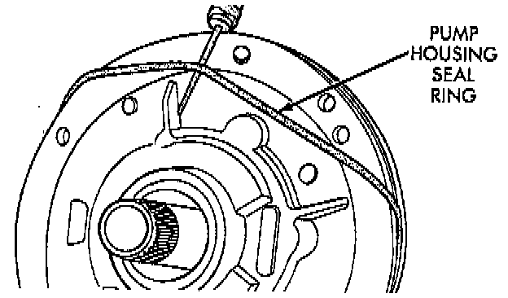
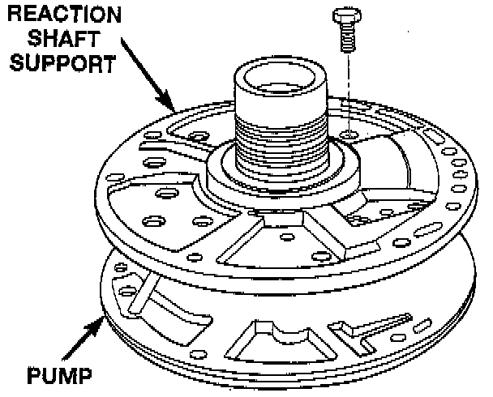
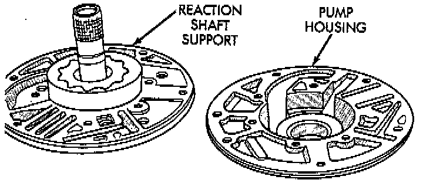
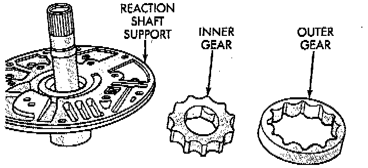
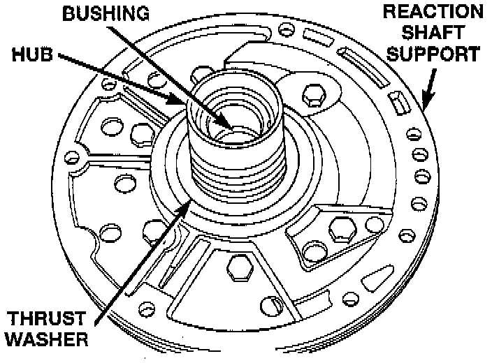
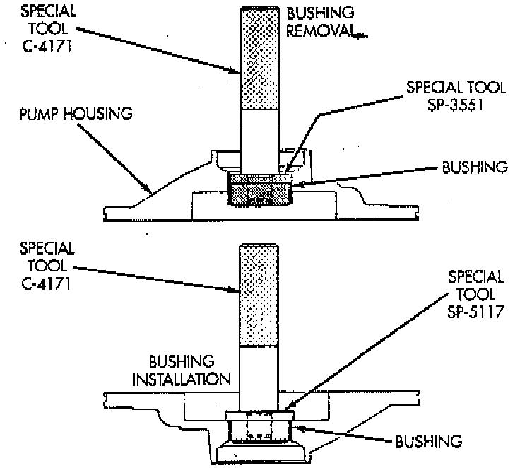
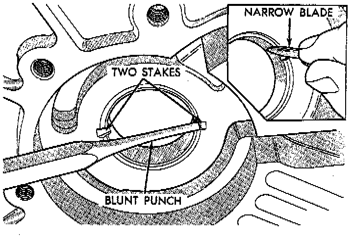
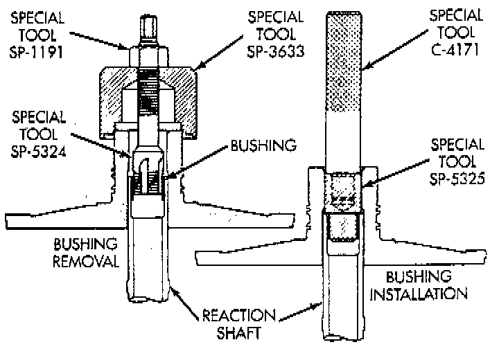

Disassembly

DISASSEMBLY
1. Remove seal ring from housing and reaction shaft support.
2. Mark pump housing and support assembly for alignment reference.

3. Remove bolts attaching pump body to support.

4. Separate support from pump housing.

5. Remove inner and outer gears from reaction shaft support.
6. If pump seal was not removed during transmission disassembly, remove seal with punch and hammer.

7. Remove front clutch thrust washer from support hub.

OIL PUMP BUSHING REPLACEMENT
1. Remove pump bushing with Tool Handle C-4171 and Bushing Remover SP-3561 from Tool Set C-3887-d, or equivalents.
2. Install new pump bushing with Tool Handle C-4171 and Bushing Installer SP-5117, or equivalents. Bushing should be flush with pump housing bore.

3. Stake new pump bushing in two places with blunt punch. Remove burrs from stake points with knife blade afterward.

REACTION SHAFT SUPPORT BUSHING REMOVAL
1. Assemble Bushing Remover Tools SP-1191, 3633 and 5324, or equivalents. Do not clamp any part of reaction shaft or support in vise.
2. Hold Cup Tool SP-3633, or equivalent firmly against reaction shaft and thread remover SP-5324, or equivalent into bushing as far as possible by hand. Then thread remover tool 3-4 additional turns into bushing with a wrench.
3. Turn remover tool hex nut down against remover cup to pull bushing from shaft. Clean all chips from shaft after bushing removal.
4. Lightly grip old bushing in vise or with pliers and back remover tool out of bushing.
5. Assemble Bushing Installer Tools C-4171 and SP-5325, or equivalents.
6. Slide new bushing onto Installer Tool SP-5325, or equivalent.
7. Position reaction shaft support upright on a clean smooth surface.
8. Align bushing in bore. Then tap bushing into place until Bushing Installer SP-5325, or equivalent bottoms.
9. Clean reaction shaft support thoroughly after installing bushing.